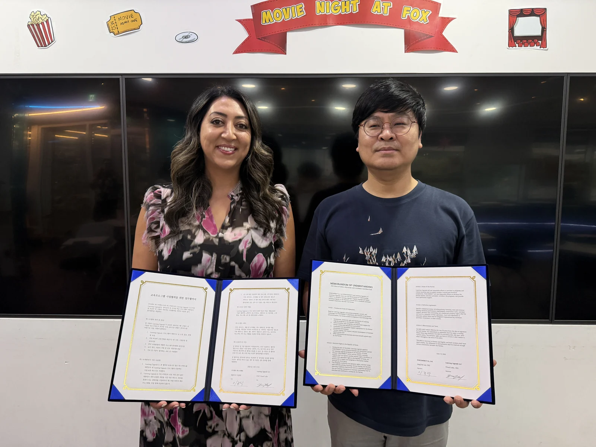

학교 교류
스톤랜치 초등학교 SRES
한국과 미국 학생들의 학교·문화 교류
2023 폭스에듀–스톤랜치 초등학교 교육 교류 협약
교육 교류 협약 보기

협약서 크게 보기 ↗
학교 교류
한국과 미국 학생들의 학교·문화 교류
2023 폭스에듀–스톤랜치 초등학교 교육 교류 협약
SEL 활동 개발·진행
교수·대학생과 함께 개발하고 진행한 SEL 활동
2023 폭스에듀–SFSU 교육·연구 협약

국제 교육 협력
SEL 활동과 교육 연구, 국제 교육 협력
공식 활동 보기 ↗영어·디지털 학습
영어·디지털 학습 프로그램의 국내 보급과 교육 지원
2026 폭스커넥트–Learning Upgrade 협약

한국 학교와의 협약·교류도 연도별 기록에서 살펴보세요.
협약과 교류 기록 보기 →한국과 미국의 SEL 교류, 케냐·필리핀의 교육 협력 소식을 만나보세요.

미국 한국 케냐 필리핀케냐 CEMASTEA는 Grow X·SpaceX와 협력해 학교 30곳에 Starlink 기기를 지원했습니다.
CEMASTEA 발표 보기 ↗Grow X는 mEducation Alliance Symposium에서 SEL 연구와 교육 프로그램을 소개했습니다.
연구 발표 기록 보기 ↗참가 대상과 일정, 비용, 연구원 동행을 확인해보세요.